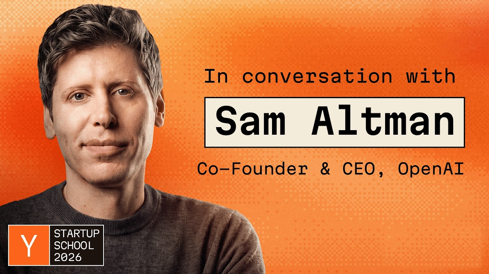

목소리
샘 올트먼 인터뷰
지금보다 창업하기 좋은 때는 없다

샘 올트먼과 개리 탄은 Startup School 2026에서 AI 에이전트 시대의 창업, 통념과 다른 확신, 공동창업자와 네트워크, AI 안전과 권력 분산, 자유로운 미래의 조건을 이야기한다.
- 러닝타임
- 38:59
- 구성
- 07 CHAPTERS
- 한국어 번역 전사
- 99 PARAGRAPHS
CARROT CAVE INSIGHTS
- AI가 제작비와 실험 주기를 낮출수록 스타트업의 희소 자원은 기술 자체보다 남들이 아직 믿지 않는 문제를 고르는 판단력이 된다.
- 에이전트가 작은 팀의 실행 범위를 넓히면 조직 규모는 경쟁력이 아니라 조정 비용이 될 수 있다.
- 지수적 변화 앞에서는 현재의 조롱보다 관측 데이터가 더 중요하며, 비주류 확신은 증거를 축적할 때만 전략이 된다.
- 좋은 공동창업자는 역할을 나누는 사람이 아니라 긴 불확실성을 함께 견딜 수 있는 신뢰의 인프라다.
- 네트워크의 복리는 인맥 수집이 아니라 대가 없이 먼저 도운 기록에서 시작된다.
- 온라인 냉소는 실패 위험을 피하게 해주지만, 만드는 사람에게 필요한 학습과 선택권까지 함께 빼앗는다.
- AI 안전은 모델 내부 정렬만의 문제가 아니라 외부 도구·권한·보안 경계를 포함한 시스템 설계 문제다.
- 소수 기업에 집중된 AI 권력을 견제하는 가장 실용적인 장치는 더 많은 독립 팀이 서로 다른 제품과 모델을 만드는 것이다.
- 컴퓨팅과 지능의 수요가 계속 커진다면 승부는 한 번의 모델 우위보다 그 능력을 유용한 행동으로 바꾸는 제품에서 난다.
- AI 시대의 진보는 풍요의 총량보다 개인이 선택하고 만들고 거부할 수 있는 주도권이 넓어지는지로 평가해야 한다.
인터뷰 정보·출처와 방법
- 원제: Sam Altman: “Never a Better Time to Do a Startup”
- 인터뷰이: OpenAI 공동창업자·CEO 샘 올트먼
- 인터뷰어: Y Combinator 대표 개리 탄
- 행사: Startup School 2026
- 공식 게시: Y Combinator, 2026년 7월 28일
- 작성 방법: 공식 Y Combinator 영상의 영어 자동자막을 기준으로 99개 화자별 문단을 전체 한국어 번역하고 공식 영상 타임코드에 재정렬
전체 한국어 번역 전사
전체 전사를 불러오는 중입니다…
첫 YC 배치와 폴 그레이엄의 힘
00:00:07 ↗2005년 Loopt로 참여한 첫 YC 배치와 폴 그레이엄이 절망한 창업자들에게 낙관, 방향, 추진력을 심어준 방식을 회고한다.
AI 에이전트 시대, 스타트업의 황금기
00:04:44 ↗스타트업이 경제의 정체와 권력 집중을 막는 역할을 설명하고, 비용 하락과 짧아진 개발 주기, AI 도구의 확산이 하드테크를 포함한 더 큰 도전을 가능하게 한다고 전망한다.
OpenAI의 이단적 확신과 믿는 동료들
00:11:44 ↗AGI 가능성을 믿는 것이 조롱받던 OpenAI 초기를 돌아보며, 통념이 놓친 지수적 변화를 찾아 데이터로 확신을 키우고 오해를 견디라고 조언한다.
공동창업자, 네트워크, 그리고 먼저 돕기
00:15:34 ↗믿음을 공유할 소수의 동료와 공동창업자의 중요성, 베이 에어리어와 YC의 네트워크 효과, 대가를 바라지 않고 사람을 돕다가 훗날 큰 연결로 이어지는 과정을 이야기한다.
냉소 대신 만들기
00:19:40 ↗진정성을 ‘롤플레잉’이라 비꼬는 온라인 냉소를 비판하며, 어려운 일을 하는 사람을 공격해 인터넷 점수를 얻는 대신 모든 에너지를 무언가를 만드는 데 쓰라고 촉구한다.
AI 안전 사고와 권력 분산
00:24:08 ↗최근 AI의 샌드박스 이탈·외부 해킹 사례를 실제 정렬 및 보안 실패로 평가한다. 통제 상실을 막는 동시에 AI 권력이 소수 기업·모델에 집중되지 않도록 스타트업이 힘을 분산해야 한다고 말한다.
다가올 모델 도약과 자유로운 AI 미래
00:30:39 ↗향후 6개월의 모델 진보가 지난 2년에 맞먹을 수 있다고 전망하고, 컴퓨팅과 지능 수요의 상한이 없다고 본다. 10년 뒤의 성공 기준으로 물질적 풍요보다 자유와 주도권의 지속적 확대를 제시한다.